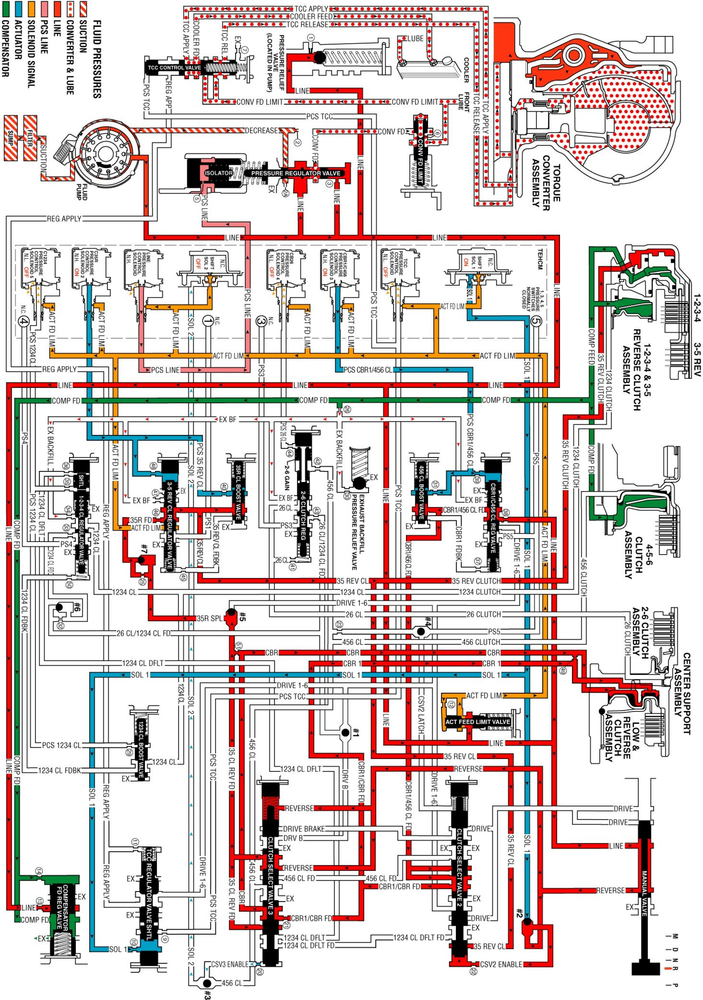

Reverse
Reverse
When the gear selector lever is moved to the Reverse (R) position (from the Park position) the normally high C35R pressure control solenoid 2 is commanded ON and the following changes occur in the transmission's hydraulic and electrical systems:
Fluid Pressure Directed in Preparation for a Shift
Manual Valve
With the manual valve in the reverse position, line pressure is directed into the reverse fluid circuit to the #2 ball check valve and clutch select valve 3.
#2 Ball Check Valve
Reverse fluid seats the #2 ball check valve against the solenoid 1 fluid passage and fluid is forced through orifice #22 into the CSV2 enable circuit.
Clutch Select Valve 2
CSV2 enable fluid, present at the valve from Park position, continues to hold the clutch select valve 2 against clutch select valve 2 spring force.
Low & Reverse Clutch Applies
Clutch Select Valve 3
Reverse fluid from the manual valve is routed to clutch select valve 3 to combine with clutch select valve 3 spring force to keep the valve in the off position. This allows reverse fluid to pass through the valve and enter the 3-5 clutch reverse feed circuit. The 3-5 clutch reverse feed fluid from the clutch select valve 3 is also routed to #5 ball check valve. CBR1/CBR FD fluid is also directed through the clutch select valve 3 to the low and reverse clutch assembly.
Low & Reverse Clutch
CBR & CBR1 fluid pressures are routed to both the inner and outer areas of the low and reverse clutch piston to hold the piston against spring force and hold the low and reverse clutch plates. The clutch was already applied in Park, but is applied with more holding capacity in Reverse (both piston areas are pressurized).
#5 Ball Check Valve
The 3-5 clutch reverse feed fluid seats #5 ball check valve against the drive 1-6 circuit allowing 3-5 clutch reverse feed fluid to enter the 3-5 reverse supply circuit. The 3-5 reverse supply fluid is then routed to #7 ball check valve and through orifice #25 where is enters the 3-5 reverse feed circuit. The 3-5 reverse feed passes through orifice #46 and then is routed to the 3-5 reverse clutch regulator valve.
3-5 Reverse Clutch Applies
C35R Pressure Control Solenoid 2
The C35R pressure control solenoid 2 is energized (HIGH) allowing actuator feed limit fluid to enter the PCS 3-5 reverse clutch circuit. PCS 3-5 reverse clutch fluid is then routed through orifice #48 to the 3-5 reverse clutch regulator valve and through orifice #40 to the 3-5 reverse boost valve.
3-5 Reverse Clutch Regulator Valve
PCS 3-5 reverse clutch fluid moves the 3-5 reverse clutch regulator valve against 3-5 reverse clutch regulator valve spring force and 3-5 reverse clutch feedback fluid. This allows 3-5 reverse feed to pass through the valve and enter the 3-5 reverse clutch circuit. The 3-5 reverse clutch fluid is then routed to the 3-5 reverse clutch and the 3-5 reverse boost valve. PS1 fluid from pressure switch 1 exhausts through the valve allowing the switch to close.
3-5 Reverse Boost Valve
PCS 3-5 reverse clutch fluid pressure acts on a differential area moving the 3-5 reverse clutch boost valve against the 3-5 reverse clutch boost valve spring. The 3-5 reverse clutch fluid passes through the valve and enters the 3-5 reverse clutch feedback circuit. As PCS 3-5 reverse clutch fluid pressure is increased to a given value, the 3-5 reverse clutch boost valve opens the 3-5 reverse clutch feedback circuit to exhaust. This results in the 3-5 reverse clutch regulator valve moving to the full feed position sending full 3-5 clutch reverse feed pressure (full line pressure) to the clutch.
3-5 Reverse Clutch
The 3-5 reverse clutch fluid enters the 1-2-3-4 and reverse clutch housing to move the piston against spring force and compensator feed fluid to apply the 3-5 reverse clutch plates.
Reverse
Reverse:
